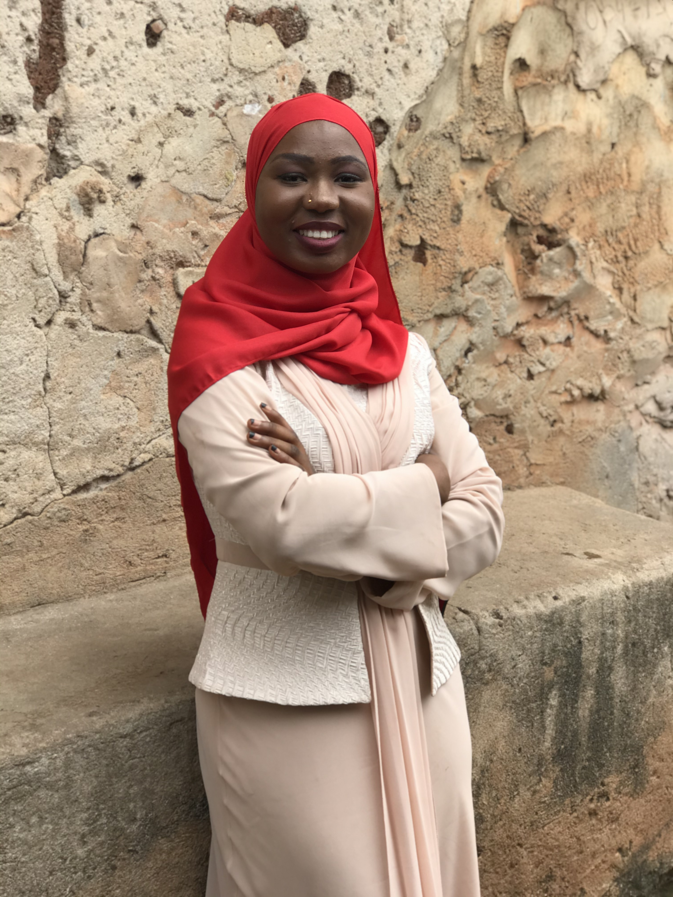

Farida Eleshin is a Junior (in third year) at Ashesi university graduating in June, 2022. She studies Computer Science. She stays at Accra, Ghana and she loves writing and coding. She has a thing for Korean dramas and reality Tv shows. She's a movie fanatic too.
Connect with me on linkedIn @Farida Eleshin on this >